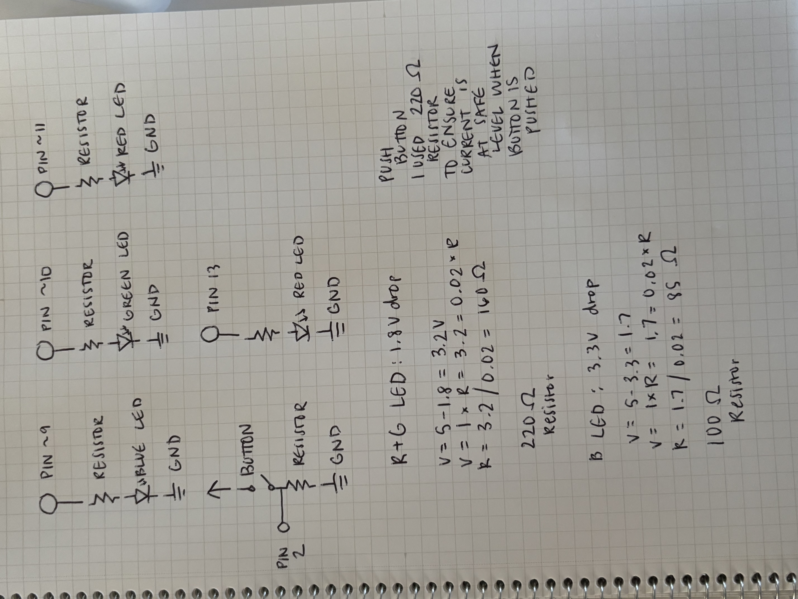

Schematic
Image of my schematic for the circuit & resistance calculation.
'Fade' Circuit Documentation

This is my 'Fade' circuit. The breadboard is connected to the Arduino with:
- Green wire → pin 10
- Red wire → pin 11
- Blue wire → pin 9
- Black wire → GND
Code
/*
Fade
This example shows how to fade an LED on pin 9 using the analogWrite()
function.
The analogWrite() function uses PWM, so if you want to change the pin you're
using, be sure to use another PWM capable pin. On most Arduino, the PWM pins
are identified with a "~" sign, like ~3, ~5, ~6, ~9, ~10 and ~11.
This example code is in the public domain.
https://docs.arduino.cc/built-in-examples/basics/Fade/
*/
// Fade Variables:
int ledblue = 9; // the PWM pin the blue LED is attached to
int ledgreen = 10; // the PWM pin the green LED is attached to
int ledred = 11; // the PWM pin the red LED is attached to
int brightness = 0; // how bright the LED is
int fadeAmount = 5; // how many points to fade the LED by
//Button Variables:
// constants won't change. They're used here to set pin numbers:
const int buttonPin = 2; // the number of the pushbutton pin
const int ledPin = 13; // the number of the LED pin
// variables will change:
int buttonState = 0; // variable for reading the pushbutton status
// the setup routine runs once when you press reset:
void setup() {
// initialize the LED pin as an output:
pinMode(ledPin, OUTPUT);
// initialize the pushbutton pin as an input:
pinMode(buttonPin, INPUT);
// Fade outputs
pinMode(ledblue, OUTPUT);
pinMode(ledgreen, OUTPUT);
pinMode(ledred, OUTPUT);
}
void loop() {
// read the state of the pushbutton value:
buttonState = digitalRead(buttonPin);
// check if the pushbutton is pressed. If it is, the buttonState is HIGH:
if (buttonState == HIGH) {
// turn LED on:
digitalWrite(ledPin, HIGH);
// red to blue color fade
for(int i =0; i<= 256; i++){ // loop from 0 to 256 to change brightness of rgb LED
analogWrite(ledred, 256 - i); //decrease red brightness
analogWrite(ledblue, i); //increase blue brightness
delay(40); // wait for 40 seconds
}
// blue to green color fade
for(int i =0; i<= 256; i++){ // loop from 0 to 256 to change brightness of rgb LED
analogWrite(ledblue, 256 - i); //decrease blue brightness
analogWrite(ledgreen, i); //increase green brightness
delay(40); // wait for 40 seconds
}
// green to red color fade
for(int i =0; i<= 256; i++){ // loop from 0 to 256 to change brightness of rgb LED
analogWrite(ledgreen, 256 - i); //decrease green brightness
analogWrite(ledred, i); //increase red brightness
delay(40); // wait for 40 seconds
}
} else {
// turn LED off:
digitalWrite(ledPin, LOW);
digitalWrite(ledblue, 0); // turn blue LED off
digitalWrite(ledgreen, 0); // turn green LED off
digitalWrite(ledred, 0); //turn red LED off
}
}
Operation Video
Video of my circuit in action, fading an rgb LEDs when the button is pressed.
Questions
1. Voltage x Time Graph
My voltage x time graph representing the voltage across an LED with analogWrite(led, 64), analogWrite(led, 128), and analogWrite(led, 255).
2. Max Current
If powered by a 1200 mAh battery, it would take approximately 15 hours to drain the battery when running this circuit, assuming the single LED draws 20mA of current plus the rgb LED draws 60mA of current when all LED are used. 1200mAh / 80mA = 15 hours.
3. Voltage
When measuring the voltage of my red LED, I got 2.03V. This is because red LEDs typically have a forward voltage of around 1.8V, which is the voltage drop across the LED when it is lit. This compares to the theoretical voltage of 1.8V for red LEDs, indicating that my measurement is accurate and consistent with expected values.
4. Help Used
None